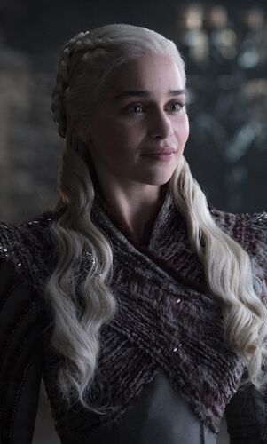

| Daenerys Targaryen | Jon Snow | Cersei Lannister |
|---|---|---|
|  | ||
| Queen Daenerys I Targaryen, also known as Daenerys Stormborn, and colloquially known as Dany, was the younger sister of Rhaegar Targaryen and Viserys Targaryen and only daughter of King Aerys II Targaryen and Queen Rhaella Targaryen, who were both ousted from the Iron Throne during Robert's Rebellion. She also served a brief tenure as the de facto Queen of the Andals and the First Men and the twenty-first ruler of the Seven Kingdoms, after claiming the throne from her predecessor Cersei I Lannister, who was killed in the Battle of King's Landing. However, she was never formally crowned, nor did she sit upon the Iron Throne. Daenerys was initially a timid, obedient youth. However, as time passed, she gathered confidence and followers, becoming a formidable conquerer and ruler. Daenerys eventually succumbed to the "Targaryen madness" of her ancestors after a series of terrible personal losses, grief, and betrayal. Razing King's Landing despite its surrender, Daenerys killed countless civilians. Unable to be dissuaded from further destruction, she was assassinated by her nephew (and lover) Jon Snow to prevent further carnage. She was eventually succeeded by Brandon the Broken (an elective monarch chosen by the Great Council of 305 AC). She formally styled herself as Daenerys Stormborn of House Targaryen, the First of Her Name, Queen of the Andals and the First Men, Protector of the Seven Kingdoms, the Mother of Dragons, the Khaleesi of the Great Grass Sea, the Unburnt, the Breaker of Chains, though the style was occasionally shortened to Daenerys of the House Targaryen, the First of Her Name, Breaker of Chains and Mother of Dragons. | Jon Snow, born Aegon Targaryen, is the son of Lyanna Stark and Rhaegar Targaryen, the late Prince of Dragonstone. From infancy, Jon is presented as the bastard son of Lord Eddard Stark, Lyanna's brother, and raised alongside Eddard's lawful children at Winterfell. Jon's true parentage is kept secret from everyone, including Jon himself, in order to protect him from those that sought the complete annihilation of House Targaryen. Jon joins the Night's Watch and is later elected as Lord Commander. As a result of several controversial decisions, such as allowing the wildlings to settle south of the Wall, Jon is murdered in a mutiny, but is resurrected by Melisandre. Freed from his Night's Watch vows, Jon and his half-sister Sansa Stark retake Winterfell from House Bolton, restoring House Stark's dominion over the North. Jon is declared King in the North. Jon negotiates with Daenerys Targaryen for an alliance against the White Walkers in the imminent Great War. Later he pledges himself and his army to Daenerys, whom he falls in love with, subsequently abdicating his throne and being named Warden of the North. Later, Jon learns his true lineage from Samwell Tarly, revealing Daenerys is his aunt. A dragonrider whose dragon was Rhaegal, he fights in the Battle of Winterfell, during which the Night King is defeated and the return of the Long Night is prevented. Afterwards, Jon aids Daenerys in her resumed campaign to take the Iron Throne and participates in the Battle of King's Landing. However, when Daenerys lays waste to a surrendered King's Landing, Jon tries but is unable to dissuade her from more destruction and assassinates her to prevent further carnage. Following the Great Council of 305 AC, Jon is sent into exile, returning to the Night's Watch. He leads the remaining Free Folk to settle in the thawing free lands. | Queen Cersei I Lannister was the twentieth ruler of the Seven Kingdoms and the widow of King Robert Baratheon. She was the daughter of Lord Tywin Lannister, twin sister of Jaime Lannister and elder sister of Tyrion Lannister. She was involved in an incestuous relationship with Jaime, who was secretly the father of her three bastard children, Joffrey, Myrcella and Tommen. After all her children died, Cersei assumed the throne under the name of Cersei of the House Lannister, the First of Her Name, Queen of the Andals and the First Men, Protector of the Seven Kingdoms, making her the first officially recognized queen regnant in the history of the Seven Kingdoms. Her reign came to an abrupt end during the Battle of King's Landing, where she and Jaime were killed. She was the last monarch to sit on the Iron Throne. |
{kind=link}
{kind=link}
{kind=link}